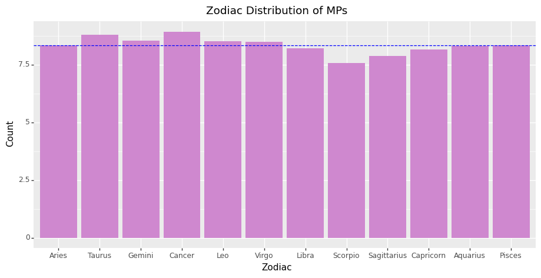
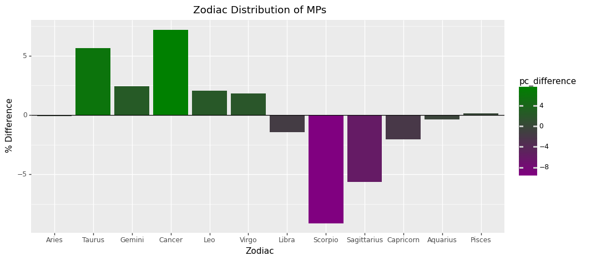
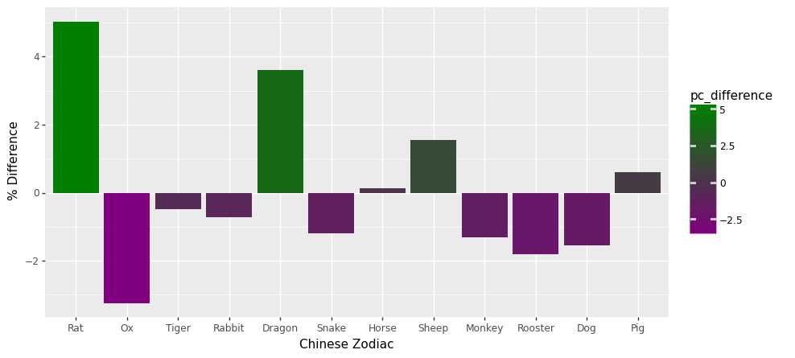

Code
# Import libraries
import pandas as pd
from plotnine import *data=pd.read_csv('data/data_included.csv')
data=data[data.birth_date.str.len()==10]
data['birth_date']=pd.to_datetime(data['birth_date'], errors='coerce')
data['month']=data['birth_date'].dt.month.astype(str).astype(float)
data['day']=data['birth_date'].dt.day.astype(str).astype(float)
# Classify data by zodiac signs
#Taurus—April 20-May 20
taurus=data[((data['month']==4) & (data['day']>19)) | ((data['month']==5) & (data['day']<21))]
#Gemini—May 21-June 20
gemini=data[((data['month']==5) & (data['day']>20)) | ((data['month']==6) & (data['day']<21))]
#Cancer—June 21-July 22
cancer=data[((data['month']==6) & (data['day']>20)) | ((data['month']==7) & (data['day']<23))]
#Leo—July 23-August 22
leo=data[((data['month']==7) & (data['day']>22)) | ((data['month']==8) & (data['day']<23))]
#Virgo—August 23-September 22
virgo=data[((data['month']==8) & (data['day']>22)) | ((data['month']==9) & (data['day']<23))]
#Libra—September 23-October 22
libra=data[((data['month']==9) & (data['day']>22)) | ((data['month']==10) & (data['day']<23))]
#Scorpio—October 23-November 21
scorpio=data[((data['month']==10) & (data['day']>22)) | ((data['month']==11) & (data['day']<22))]
#Sagittarius—November 22-December 21
sagittarius=data[((data['month']==11) & (data['day']>21)) | ((data['month']==12) & (data['day']<22))]
#Capricorn—December 22-January 19
capricorn=data[((data['month']==12) & (data['day']>21)) | ((data['month']==1) & (data['day']<20))]
#Aquarius—January 20-February 18
aquarius=data[((data['month']==1) & (data['day']>19)) | ((data['month']==2) & (data['day']<19))]
#Pisces—February 19-March 20
pisces=data[((data['month']==2) & (data['day']>18)) | ((data['month']==3) & (data['day']<21))]
#Aries—March 21-April 19
aries=data[((data['month']==3) & (data['day']>20)) | ((data['month']==4) & (data['day']<20))]
# Create a dataframe with the counts of each sign
df=pd.DataFrame([aries.shape[0], taurus.shape[0], gemini.shape[0], cancer.shape[0], leo.shape[0], virgo.shape[0], libra.shape[0], scorpio.shape[0], sagittarius.shape[0], capricorn.shape[0], aquarius.shape[0], pisces.shape[0]] , columns=['count'], index=[ 'Aries','Taurus', 'Gemini', 'Cancer', 'Leo', 'Virgo', 'Libra', 'Scorpio', 'Sagittarius', 'Capricorn', 'Aquarius', 'Pisces'])
df.index=pd.CategoricalIndex(df.index, categories=['Aries','Taurus', 'Gemini', 'Cancer', 'Leo', 'Virgo', 'Libra', 'Scorpio', 'Sagittarius', 'Capricorn', 'Aquarius', 'Pisces'], ordered=True)
df['percent']=df['count']/df['count'].sum()*100
df['percent']=df['percent'].round(2)
# dfFigure 1 represents the zodiac distribution of MPs
# Plot the distribution of zodiac signs
ggplot(df, aes(x=df.index, y='percent')) \
+ geom_bar(stat='identity', fill='#CF88CF') \
+ labs(x='Zodiac', y='Count') \
+ theme(figure_size=(11,5))\
+ labs(title='Figure 1: Zodiac Distribution of MPs')\
+ geom_hline(yintercept=8.33, linetype='dashed', color='blue')
Figure 2 plots the percentage difference of MPs and their zodiac signs
# Plotting the percentage difference. Using 8.33 since population data for zodiac signs is unavailable.
df['difference']=df['percent']-8.33
df['pc_difference']=df['difference']/8.33*100
ggplot(df, aes(x=df.index, y='pc_difference', fill='pc_difference')) \
+ geom_bar(stat='identity') \
+ labs(x='Zodiac', y='% Difference') \
+ theme(figure_size=(11,5))\
+ labs(title='Zodiac Distribution of MPs')\
+ scale_fill_gradient(low='purple', high='green')\
+ geom_hline(yintercept=0, linetype='solid', color='black')
Individuals born under the first six zodiac signs appear to have an uncanny proclivity towards becoming Members of Parliament. Cancerians and Taurus almost have a celestial VIP access to the political arena!
But, sadly, it appears that the stars have conspired against you, Scorpios. Perhaps they were engrossed in their own enigmatic allure, or were too preoccupied with scheming world dominance from the shadows. Don’t be concerned, Scorpios; your cosmic destiny may have something even more fascinating in store for you, such as becoming a master spy or TV superstar.
# Defining the zodiac signs
rabbit=[1915, 1927, 1939, 1951, 1963, 1975, 1987, 1999, 2011, 2023]
dragon=[1916, 1928, 1940, 1952, 1964, 1976, 1988, 2000, 2012, 2024]
snake=[1917, 1929, 1941, 1953, 1965, 1977, 1989, 2001, 2013, 2025]
horse=[1918, 1930, 1942, 1954, 1966, 1978, 1990, 2002, 2014, 2026]
sheep=[1919, 1931, 1943, 1955, 1967, 1979, 1991, 2003, 2015, 2027]
monkey=[1920, 1932, 1944, 1956, 1968, 1980, 1992, 2004, 2016, 2028]
rooster=[1921, 1933, 1945, 1957, 1969, 1981, 1993, 2005, 2017, 2029]
dog=[1922, 1934, 1946, 1958, 1970, 1982, 1994, 2006, 2018, 2030]
pig=[1923, 1935, 1947, 1959, 1971, 1983, 1995, 2007, 2019, 2031]
rat=[1924, 1936, 1948, 1960, 1972, 1984, 1996, 2008, 2020, 2032]
ox=[1925, 1937, 1949, 1961, 1973, 1985, 1997, 2009, 2021, 2033]
tiger=[1926, 1938, 1950, 1962, 1974, 1986, 1998, 2010, 2022, 2034]
# Function to convert year to zodiac sign
def year_to_zodiac(year):
'''Converts year to Chinese zodiac sign'''
if year in rabbit:
return 'Rabbit'
if year in dragon:
return 'Dragon'
if year in snake:
return 'Snake'
if year in horse:
return 'Horse'
if year in sheep:
return 'Sheep'
if year in monkey:
return 'Monkey'
if year in rooster:
return 'Rooster'
if year in dog:
return 'Dog'
if year in pig:
return 'Pig'
if year in rat:
return 'Rat'
if year in ox:
return 'Ox'
if year in tiger:
return 'Tiger'
# Calculating counts and percentages of zodiac signs
data=pd.read_csv('data/data.csv')
data['birth_date']=pd.to_datetime(data['birth_date'], errors='coerce')
data['year']=data['birth_date'].dt.year
data['zodiac']=data['year'].apply(year_to_zodiac)
count_df=data.groupby('zodiac').count()[['name']]
count_df['percent']=count_df['name']/count_df['name'].sum()*100
count_df['percent']=count_df['percent'].round(2)
count_df['difference']=count_df['percent']-8.33
count_df['pc_difference']=(count_df['difference']/8.33*100).round(2)
count_df=count_df.reindex(['Rat', 'Ox', 'Tiger', 'Rabbit', 'Dragon', 'Snake', 'Horse', 'Sheep', 'Monkey', 'Rooster', 'Dog', 'Pig'])
count_df.index=pd.CategoricalIndex(['Rat', 'Ox', 'Tiger', 'Rabbit', 'Dragon', 'Snake', 'Horse', 'Sheep', 'Monkey', 'Rooster', 'Dog', 'Pig'], categories=['Rat', 'Ox', 'Tiger', 'Rabbit', 'Dragon', 'Snake', 'Horse', 'Sheep', 'Monkey', 'Rooster', 'Dog', 'Pig'], ordered=True)
# count_df 
As the mythological story in the Chinese zodiac goes, the Rat rode on the Ox but jumped off at the last moment to finish first in the race of animals, depriving the Ox of its victory. In political representation too the Rat seems to be enjoying success with a 4.2% advantage, at the expense of those born in the Year of the Ox (-5.3%). The prevalence of the remaining signs seems to follow their finishing order in the race…
⚠️ For obvious reasons this inredibly insightful comparison is for complete entertainment purposes